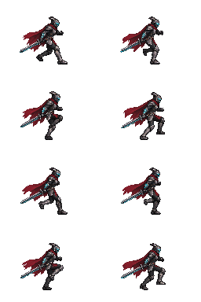
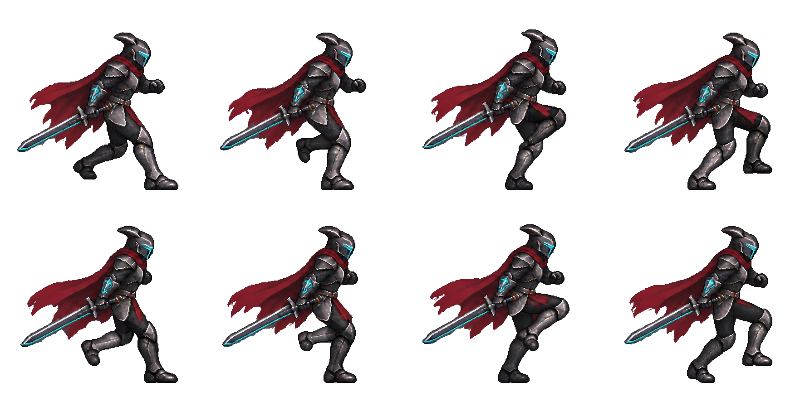
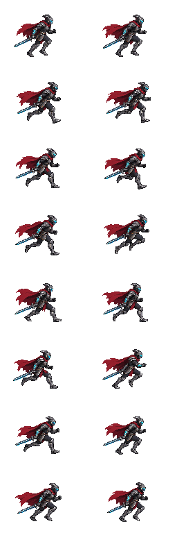
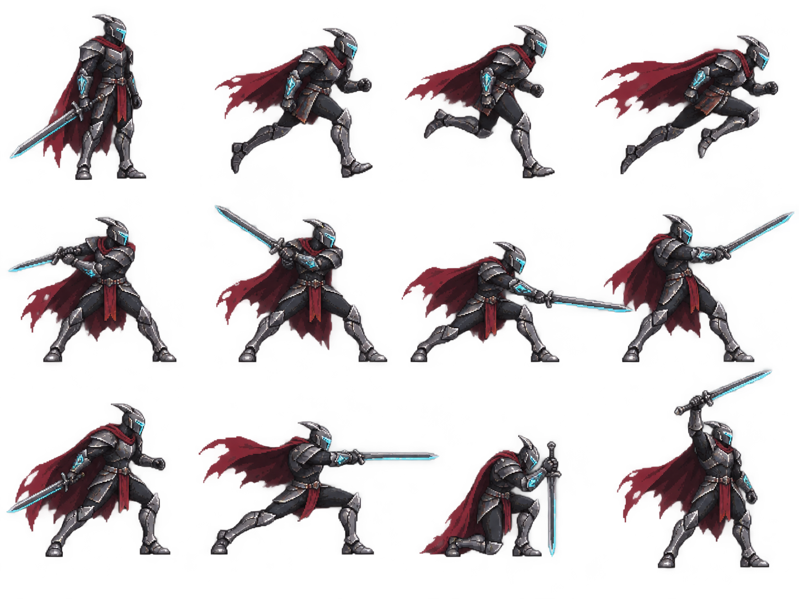

CYBER KINGDOM / RUN STUDY 03
黑鋼騎士 · 跑步重設
固定原生像素 · 全身姿勢與左右承重。
逐格1 / 1
RUN 03 / NATIVE PIXEL ATLAS
實際播放的像素圖格
與動畫使用相同像素，僅排列為兩欄方便檢視。完整姿勢一次縮至遊戲尺寸，不拆件、不拉伸；每格畫布 128 × 96，人物約 60 像素高。

高解析度生成原稿（設計參考，非遊戲像素密度）

開啟未縮小的原稿前一版 16 格（相同像素密度比較）

早期造型探索（參考用，非完成動畫）

查看造型原稿